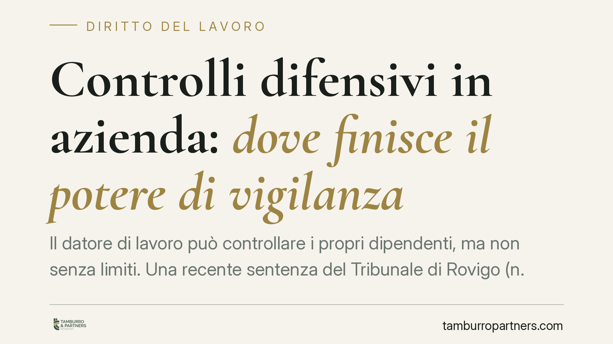

Controlli difensivi in azienda: dove finisce il potere di vigilanza
Il datore di lavoro può controllare i propri dipendenti, ma non senza limiti. Una recente sentenza del Tribunale di Rovigo (n. 182/2026) torna a distinguere tra vigilanza ordinaria e controlli difensivi mirati, attivabili solo a fronte di un fondato sospetto di illecito. Una linea di confine decisiva per la legittimità delle prove raccolte e per la tenuta di un eventuale licenziamento.

Il caso e il principio
Il Tribunale di Rovigo, con la sentenza n. 182 del 27 maggio 2026, è tornato su un tema ricorrente nel contenzioso del lavoro: fino a che punto il datore di lavoro può controllare l'attività dei dipendenti senza violare lo Statuto dei lavoratori.
La vicenda ruota attorno a un controllo condotto tramite agenti verificatori esterni su un *clinic manager*, incaricato della gestione di una struttura sanitaria. Il nodo è la distinzione tra due categorie di controllo che il giudice tiene ben separate: la vigilanza ordinaria sull'esecuzione della prestazione e i cosiddetti "controlli difensivi", diretti ad accertare condotte illecite già sospettate.
Inquadramento normativo
Il quadro di riferimento è la Legge 300/1970 (Statuto dei lavoratori). L'art. 3 impone che i nominativi e le mansioni del personale addetto alla vigilanza siano comunicati ai lavoratori: il controllo sull'esatto adempimento della prestazione deve essere trasparente, non occulto.
L'art. 4, nella versione riformata dal D.Lgs. 151/2015, disciplina invece gli strumenti dai quali può derivare un controllo a distanza (impianti audiovisivi e strumenti di lavoro), subordinandone l'uso ad accordo sindacale o autorizzazione dell'Ispettorato, salvo gli strumenti necessari a rendere la prestazione.
Accanto a questo impianto legale, la giurisprudenza ha elaborato la figura dei controlli difensivi in senso stretto: quelli finalizzati non a verificare la diligenza del lavoratore, ma ad accertare comportamenti illeciti lesivi del patrimonio o dell'immagine aziendale. Questi controlli restano legittimi anche se occulti, ma solo in presenza di un fondato sospetto già maturato, e devono essere mirati e proporzionati. Non possono trasformarsi in una sorveglianza generalizzata e preventiva.
Implicazioni pratiche
La distinzione non è teorica. Da essa dipende la utilizzabilità delle prove raccolte e, di conseguenza, la legittimità del provvedimento disciplinare o del licenziamento fondato su quelle prove.
Se il controllo si qualifica come vigilanza ordinaria mascherata da indagine difensiva, il rischio è duplice: l'inutilizzabilità del materiale raccolto e l'esposizione a contestazioni per violazione dello Statuto. Il licenziamento costruito su un controllo illegittimo può essere annullato, con ordine di reintegra o condanna al risarcimento a seconda del regime applicabile.
Per il datore di lavoro — e in particolare per figure apicali come il *clinic manager*, dotate di autonomia gestionale — questo significa che l'attivazione di verifiche esterne deve poggiare su elementi concreti e documentabili. Il sospetto generico o la volontà di "tenere d'occhio" un dipendente non bastano.
È centrale il momento in cui matura il sospetto: il controllo difensivo legittimo scatta *dopo* l'insorgere di indizi seri, non prima. Un'indagine avviata a monte, in assenza di segnali specifici, tende a scivolare verso la vigilanza vietata.
Rileva anche la proporzionalità: la verifica deve essere circoscritta ai fatti sospettati, limitata nel tempo e non invasiva oltre il necessario. Un controllo esteso e prolungato difficilmente supera il vaglio giudiziale.
Cosa fare in concreto
- Documentate il sospetto prima di agire. Raccogliete e datate gli elementi indiziari (anomalie contabili, segnalazioni, ammanchi) che giustificano l'indagine difensiva.
- Circoscrivete l'ambito del controllo. Limitate la verifica ai fatti specifici sospettati, evitando sorveglianze generalizzate o prolungate senza motivo.
- Verificate gli obblighi dell'art. 3 e 4. Distinguete se l'attività rientra nella vigilanza ordinaria (che richiede trasparenza) o negli strumenti soggetti ad accordo sindacale o autorizzazione.
- Formalizzate il ricorso a verificatori esterni. Definite per iscritto mandato, perimetro e durata dell'incarico, così da poterne dimostrare la proporzionalità.
- Fate valutare la strategia prima del provvedimento. Consigliamo di verificare la utilizzabilità delle prove prima di avviare un procedimento disciplinare o un licenziamento fondato su di esse.
Conclusione
La sentenza di Rovigo conferma un equilibrio consolidato: il potere di controllo del datore esiste, ma è legittimo solo entro confini precisi. Superarli non protegge l'azienda: la espone. La differenza tra un controllo difficilmente contestabile e uno destinato all'annullamento sta tutta nel metodo con cui viene predisposto.
---
*Contributo informativo a cura di Tamburro & Partners - Avv. Giuseppe Tamburro. Non costituisce parere legale.*
Ogni storia di lavoro ha i suoi tempi.
Se gestisci HR e vuoi un confronto su contenzioso, ispezioni o licenziamenti, scrivi allo studio. Ti rispondiamo entro un giorno lavorativo.